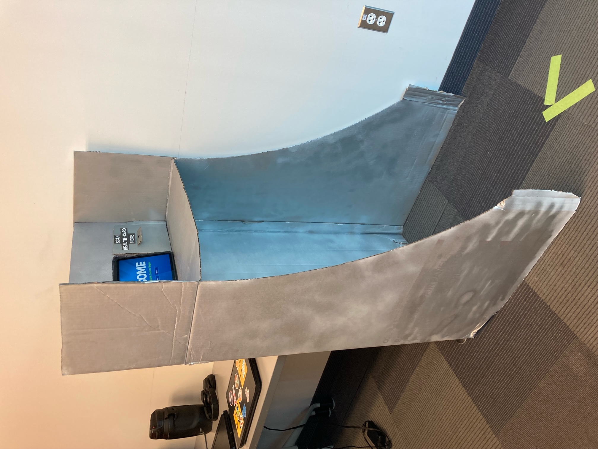
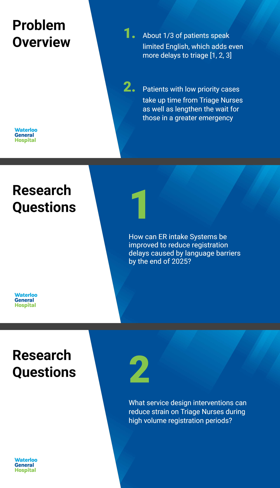
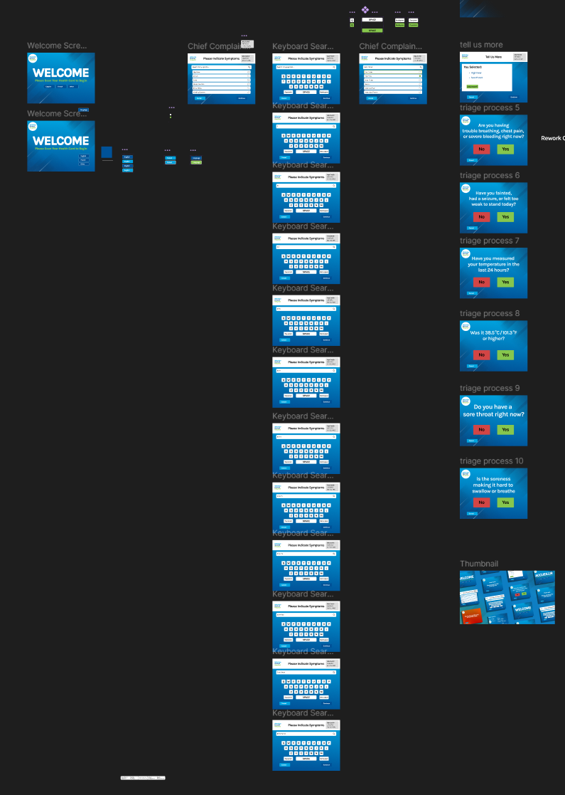

ER Self-Triage Kiosk
Service Design and UI/UX


The Project and My Role
This was a term-long service design project for GBDA 301 at Waterloo. The problem: about a third of ER patients have limited English proficiency, and low-priority cases pull Triage Nurse time away from bigger emergencies.
I was the lead digital prototyper as well as a graphic designer on a 6-person team, responsible for the Figma UI, the prototype's visual identity, and user testing.
Our Solution:
A self-service kiosk that lets low-priority patients sign themselves in, switch languages, and get routed with a printed triage code - fully optional, so no one gets stuck if they'd rather talk to a nurse.
Our Goals
Reduce registration delay from language barriers, ease strain on Triage Nurses during high-volume periods, and let every design decision get validated through real user testing instead of assumption.
Problem Framing
31% of observed patients were Limited English Proficient (LEP); of those, 67% spoke a Chinese dialect
Our Research Questions
What service design interventions can reduce strain on Triage Nurses during high-volume registration?
Prototyping and Testing
Before finalizing any of our screens, we ran two rounds of testing with a physical kiosk prototype. We ran a low-fidelity bodystormed session, then a high-fidelity round after revisions.



Our testing protocol included:
- Think-aloud walkthrough of a scenario (abdominal pain with mild chest pain)
- TAM survey (7-item, 7-point Likert) on perceived usefulness and ease of use
- Brief post-use interview asking what confused or reassured them
The Symptom Screen
After our testing sessions, we found that the symptom selection screen was the main pain point for users. This is what we learned:
- The original symptom screen was a dense grid - one participant said it "jumps right at your face," too many options at once
- Testers wanted more language options, since "not everybody in the emergency room is a native English speaker"
- A receptionist desk placed next to the kiosk confused people about where to go first
Updated symptom screen vs. the low-fidelity grid version:

The problem: the grid buried symptoms behind small text and forced users to scan the whole screen before acting - this was definitely not ideal for someone in pain or under stress.
The fix: Swapped the grid for a vertical, searchable list with larger text. People already know how to search a list the way they'd search a menu, so it needs no learning curve.
High-Fidelity Prototype Results
- Users reported the kiosk would speed up triage (avg 6.0/7 on TAM) and felt easy to learn (6.0/7)
- Moderate scores on symptom communication (4.75/7) and self-sufficiency (4.75/7) flagged that search discoverability and end-of-flow instructions still needed work
- Multiple participants asked for audio support or text-to-speech for people who can't read or are under stress
The Sign in Screen
The original design assumed English fluency. Testers said otherwise, and the research backed it up: 31% of ER patients are limited-English-proficient, and 67% of those speak a Chinese dialect.
The Fix: put language choice as the very first interaction, so users are able to navigate the rest of the screens in their preferred language.
Updated welcome screen vs. the low-fidelity version:

Brand Identity
A stunning UI wasn't the focus of our project, but I still wanted our prototype to feel connected and grounded. So as the team's graphic designer I built a full visual identity for a fictional hospital, Waterloo General Hospital. I also designed a waiting-room display screen used to make our bodystorming sessions feel situated in a real environment, and matched every team slide deck to the same visual language.


Final Thoughts
Post-redesign testing showed users had an easier time self-assessing symptoms, and TAM survey scores landed between 5–6 out of 7 for usefulness and ease of use. That's a good score, but there is still room to improve. The sample size was small, and testers flagged that the kiosk still doesn't serve people with visual or reading impairments.
Working on a healthcare service made every decision feel higher-stakes than a typical UI project a moment of confusion for our users wasn't just annoying, it's a real delay for someone who's unwell. That is exactly why I leaned on testing data over my own assumptions about what felt "obvious".